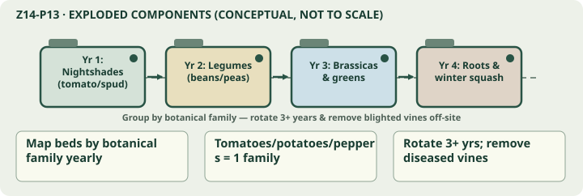

Z14-P13 · Food production and preservation · New manuscript
Rotate vegetable plant families each season to disrupt pests and disease
Reduce soil-borne blights, wilts, and overwintering insects naturally without relying on heavy chemical sprays.
When it applies · Multi-year backyard and small-acreage food gardens.
Equipment · Simple drawn annual garden bed map grouped by botanical family (nightshades, brassicas, legumes, cucurbits, roots/alliums).

Actions
- Sketch your garden beds each year and avoid planting members of the SAME botanical family in the exact same soil for at least 3 years whenever space permits—grouping by family rather than single species (e.g., tomatoes, potatoes, peppers, and eggplant are ALL nightshades sharing the same blights).[P03]
- Follow heavy nitrogen feeders (corn, squash, cabbage) with nitrogen-fixing legumes (peas, bush/pole beans) or light-feeding root crops (carrots, beets, onions) to balance soil fertility across seasons.[P03, P02]
- Clear and dispose of heavily diseased plant vines (such as blighted tomato or squash foliage) off-site rather than burying them into home compost piles that fail to heat high enough to kill fungal spores.[P03]
Failure recognition · Planting potatoes in the exact same bed where blighted tomatoes grew the prior summer, triggering early late-blight collapse.[P03]
Verify · Confirm annual bed map saved in garden log and botanical families shift cleanly across beds each spring.[P03, ED]
Stop or change course · Persistent soil-borne wilts (Fusarium/Verticillium) require resistant cultivars, longer rotations, or clean container/raised-bed isolation.[P03]
Evidence and editorial notes
- P02 · University of Minnesota Extension · Planting the Vegetable Garden (current web edition)
- Section: Soil Preparation, Testing, Compost, and Safe Fertility · Conditions: Residential garden beds and small-acreage food plots
Support: Test garden soil through an accredited lab (e.g., UMN Soil Testing Lab) before heavy amending to determine pH, nutrients, and urban lead risk; incorporate finished compost and avoid applying raw animal manure immediately before harvesting edible crops.
Limitations: Urban soils near older painted buildings or roads may contain legacy lead requiring raised beds and clean soil barriers. · Conflicting evidence: None; links soil fertility to food-safety contamination prevention.
Editorial note: Separates safe composted soil building from pathogen/heavy-metal hazards. · Specialist reviewer: Soil science and Extension horticulture
Primary source · checked 2026-11-24 - P03 · University of Minnesota Extension · Planting the Vegetable Garden (current web edition)
- Section: Watering, Mulching, Crop Rotation, and Integrated Pest Management · Conditions: Home vegetable plots across seasonal dry/wet swings
Support: Water deeply at the soil base rather than overhead foliage to conserve moisture and curb fungal disease, mulch soil to stabilize temperature and weeds, rotate plant families across seasons, and identify pests before choosing least-toxic controls.
Limitations: Untreated rainwater or suspect surface water should not be splashed onto ready-to-eat leafy crops immediately before harvest. · Conflicting evidence: None; aligns with FSG-4 clean produce handling.
Editorial note: Grounds resilient low-input gardening and biological pest management. · Specialist reviewer: Extension horticulture and integrated pest management
Primary source · checked 2026-11-24
Source lineage · UMN Extension Vegetable Crop Management; new manuscript · Classification · New manuscript.